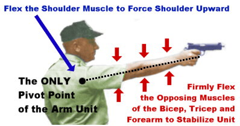
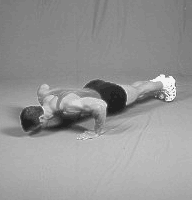
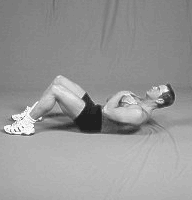
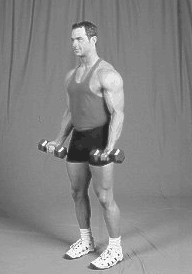
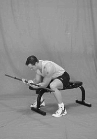
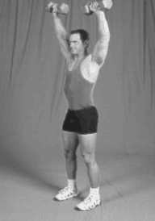
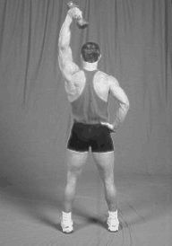

"Fatigue makes cowards of us all." - Vince Lombardi
The Importance of Physical Strength
I attribute the greatest rise in my personal scores to the increased physical strength from a weight training program. If you are weak, you will soon find that the exersion of holding the pistol toward the target will cause fatigue and uncontrollable shaking. In other words, greater strength reduces your "arc of movement."
The objective of physical training for a pistol shooter is to condition you physically to better withstand the rigors of match conditions. An individual in good physical condition has better developed reactions, better control of their muscles and better endurance; all of which promote consistency in performance.
Developing a Physical Training Program
Physical Conditioning must consist of exercises of a general nature directed toward strengthening the muscles, proper breathing, developing body flexibility and precision of movement. The requirements of marksmanship are such that drills must consist of exercises which develop the muscles and flexor of the arms and fingers, and the muscles of the shoulders and even the waist. A certain amount of static tension (dynamic) type exercise is valuable if it is not overdone. Whenever a shooter exercises, he or she must put the maximum effort into the exercise. Merely going through the motions of an exercise is of no advantage.
Recognize that physical conditioning is a gradual process and results will not be apparent immediately. As your physical condition improves, the number of repetitions may be gradually increased. Be advised that very heavy exercise like serious barbell weight lifting is discouraged as it can create injuries that will hinder your performance more than it will help. I would suggest a program that consists of daily walking and calesthenics accompanied by every-other-day light dumbell exercises as most ideal for our purposes.
The Muscle Groups that Matter
While you might benefit from a physical training program that is general in nature and targets all the muscles of the body, a more limited program may suffice. While the legs and back muscles play a role in steadying the stance, you can see from the diagram below where the greatest muscular demand on a shooter lies:

Try to visualize turning your entire arm into an "iron rod" that begins at the shoulder socket and ends at the middle finger. The "rod" is securely held in place by isometrics or contracted opposing muscles. The opposing muscles of the shoulder, tricep, bicep and forearm are at work here; it is not accomplished by "locking the joint" of the elbow. You must recognize that unless your triceps, biceps and forearms are quite strong, you can NEVER visualize or experience this feeling. That is why a weight training program is in order for any pistol shooter.
Targeted Exercise Program
A very effective program may only involve a remarkably small investment of time on your part. For example, the training program that I utilize includes two general-fitness exercises that are performed every day, and four strength-building exercises that are performed every other day. Regardless of what program you put together, you must remember four things:
The Daily General Fitness Calesthenics
Targeted at general fitness and stamina, these familar calesthenics should be performed every day. Two sets of as many repetitions as you can handle should suffice.
 |
 |
| Push-ups | Crunches (Sit-ups) |
The Every-Other-Day Strength-Builders
Performed every-other-day to allow for adequate recovery of the stressed muscles that you are developing, you are cautioned not to "overdo it" with these. Two or three sets with "moderate" weight of as many repetitions that you can handle should suffice..
 |
 |
| Biceps Curls | Forearm Curls (Both Sides) |
 |
 |
| Shoulder Presses | Triceps (French) Curls |
Establishing Muscle Memory
Much of the goal of training for pistol marksmanship is to program your "auto-pilot." It is a fact that the muscles themselves have "memory" - a familiarity with the "feeling" of the processes that occur automatically with a learned procedure. While the isotonic exercises described above are excellent for building muscle fiber, it is not entirely enough! You must continue to practice often and utilize the muscles in "real-life" scenarios so that the newly developed muscle fiber also acquires this necessary "memory" needed for effective and consistent results.
Ideally, you would be able to get to the range and fire a practice session every single day. However, if that is not a possibility, in conjunction with short dry-fire sessions, I suggest that you take a proper shooting stance and hold out a five-pound weight for as long as you can. This will condition and discipline the developing muscles in preparation for match conditions.